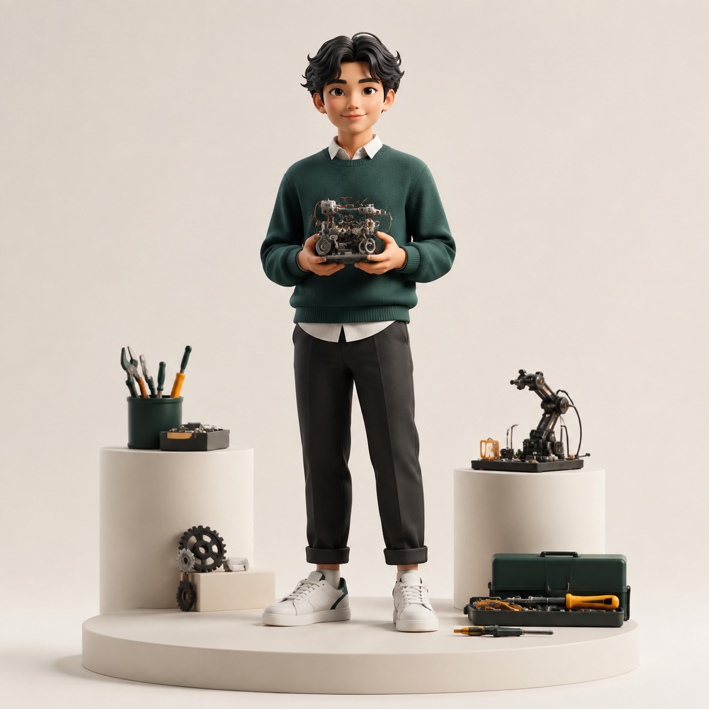

CURRENT ENGINEERING MODEPractical Builder
YOUR ENGINEERING SNAPSHOT
Practising Builder
You learn fastest when an idea becomes something you can assemble,
test, and improve.
Your strongest signal is hands-on technical breadth. You are increasingly able to handle familiar engineering tasks independently and troubleshoot common problems. Your next step is to connect that practical confidence to planning and evidence-based decisions.
86Hands-on breadth
79Design & prototyping
72Proposal with plan
→
Your next useful stretch
Take ownership of one interface between two subsystems, document what fails, and explain the trade-off to your team.
Formative self-reflection · not a professional
qualificationView full profile ↓